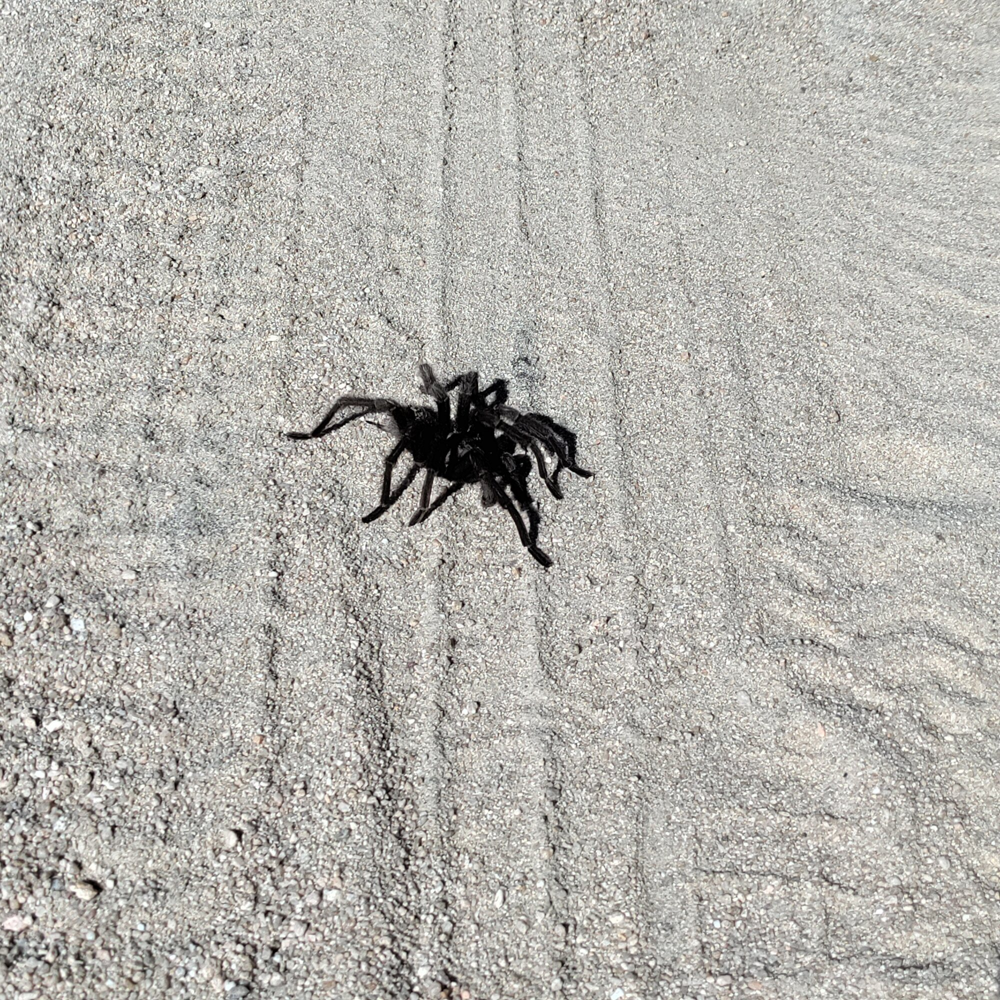
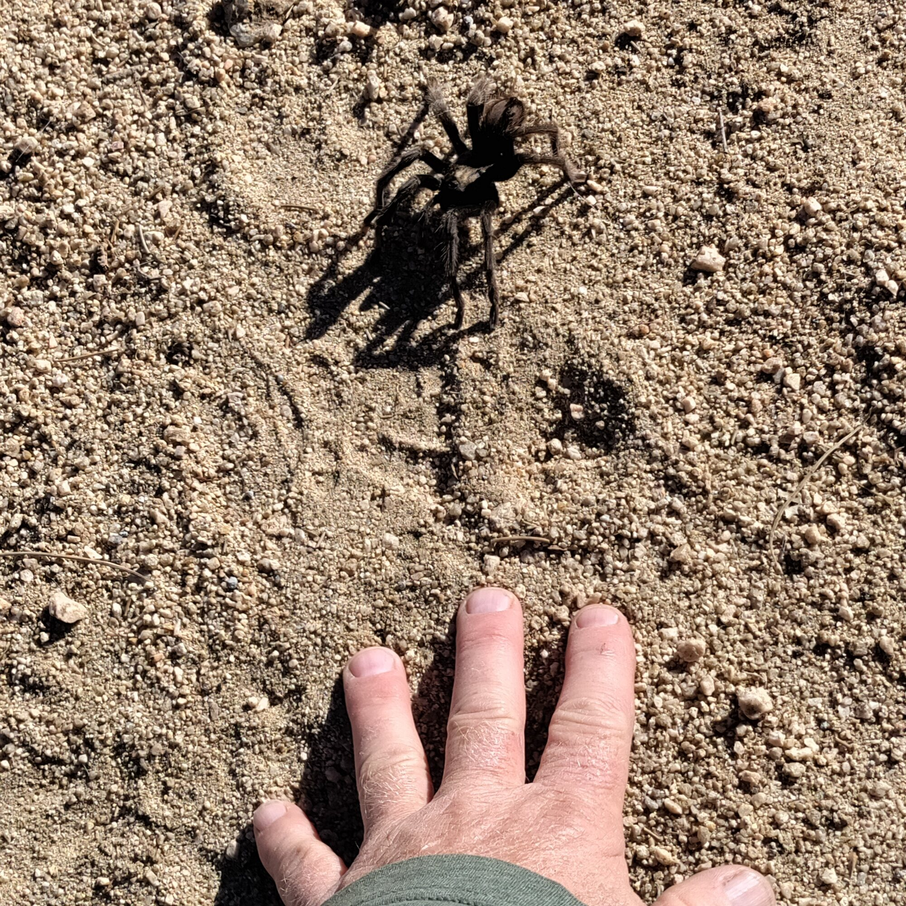
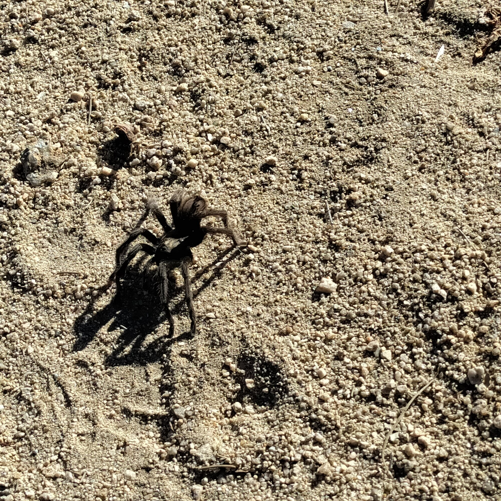

Field Report 026 · Land & Ecology
Desert
Tarantula
Sighting
Field Observation — Desert Tarantula Location: Mojave Desert, Boulder Gardens Fieldstation Identification: Aphonopelma sp.

Field Observation — Desert Tarantula
Location: Mojave Desert, Boulder Gardens Fieldstation
Identification: Aphonopelma sp. (species not confirmed)
Two large, dark-colored tarantulas were observed moving across the desert floor. One in the kitchen and one on the road 1/2 mile away.
These impressive spiders spend much of their lives in underground burrows, emerging primarily at night to hunt insects and other small creatures.
Autumn is mating season for many desert tarantulas, when mature males leave their burrows and wander in search of females. These two individuals may have been engaged in just such a journey.
How venomous are they?
Although tarantulas possess large fangs and venom capable of paralyzing their prey, desert tarantulas are generally not considered dangerous to humans. Their venom is relatively mild, and a bite typically causes localized pain and swelling, sometimes compared to a bee sting. Allergic or more serious reactions are possible but uncommon.
Their more frequently used defense is to flick tiny, barbed hairs from their abdomens, which can irritate skin and especially the eyes.
Naturalist's note: Despite their intimidating appearance, these gentle desert predators are more interested in escaping danger—or finding a mate—than confronting humans.
Photographic Record
The observation, seen in place
Three photographs document the October tarantula sightings at Boulder Gardens.


System Thread
Related Fieldstation records
Public synopsis derived from Boulder Gardens Fieldstation Workbook source record FR026. Detailed equipment records, calculations, unresolved questions, and corrections remain in the workbook.